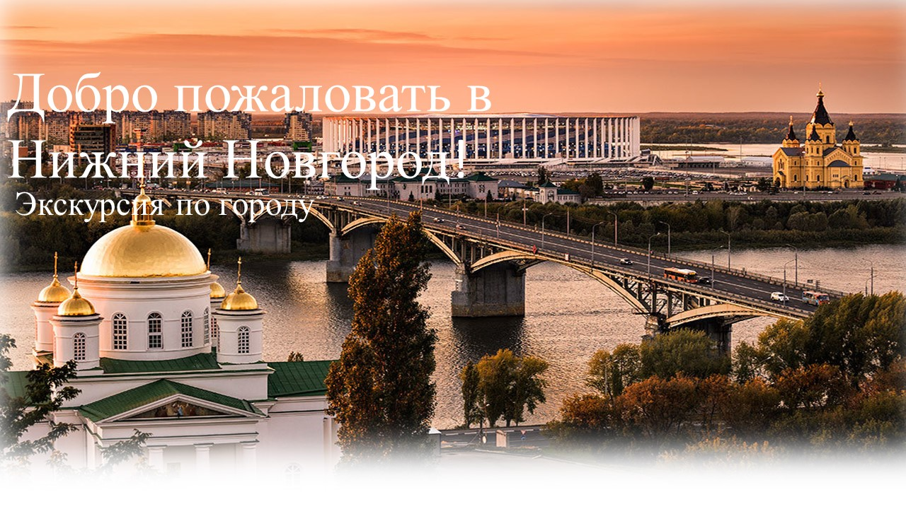
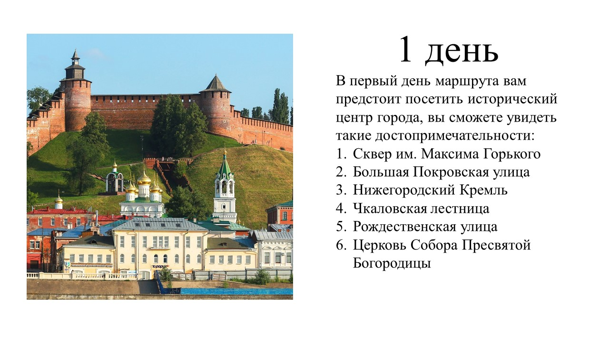

Навигация
Первый день
Второй день
Почему стоит посетить Нижний Новгород?
Нижний Новгород — это город с богатой историей, культурой и уникальной архитектурой.Он был основан в 1221 году и имеет множество исторических памятников, включая Кремль, который является одной из главных достопримечательностей города. Набережная реки Волги — отличное место для прогулок, где можно насладиться видами и атмосферой города. Набережная реки Волги — отличное место для прогулок, где можно насладиться видами и атмосферой города. Набережная реки Волги — отличное место для прогулок, где можно насладиться видами и атмосферой города. Набережная реки Волги — отличное место для прогулок, где можно насладиться видами и атмосферой города.
Набережная реки Волги — отличное место для прогулок, где можно насладиться видами и атмосферой города. Город активно развивается и проводит различные фестивали, выставки и культурные мероприятия, что делает его интересным для посещения в любое время года.
